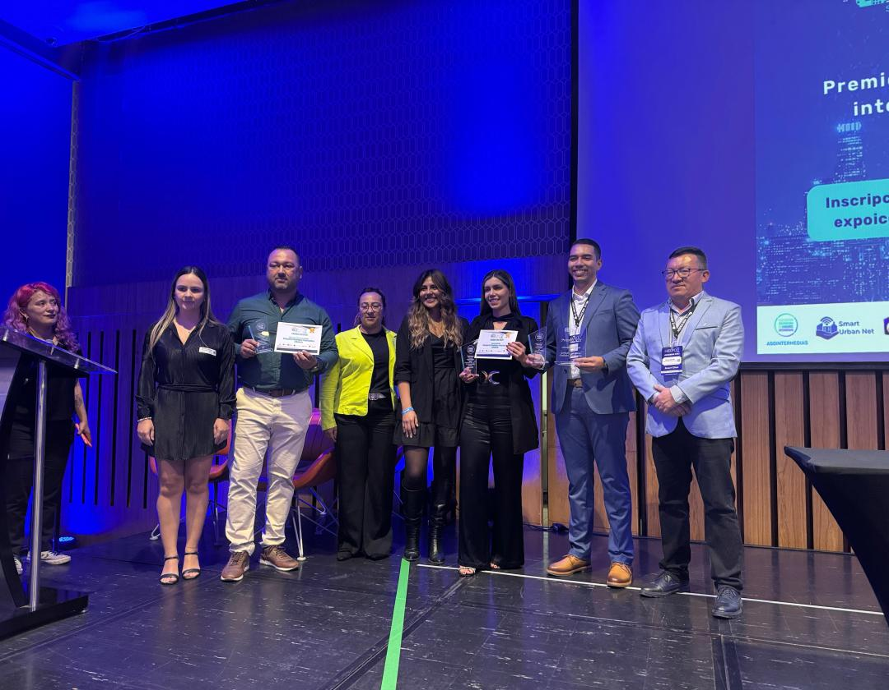
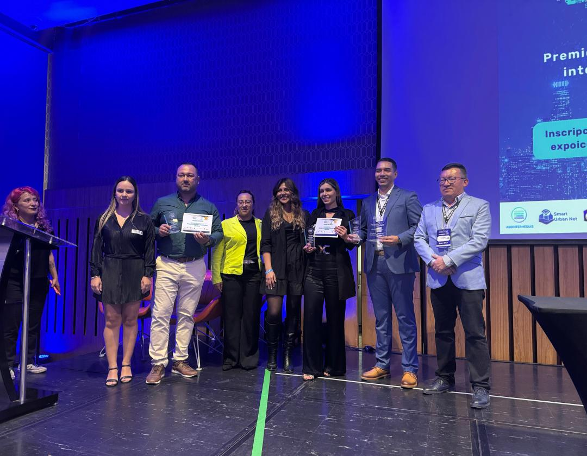

EVENTOS
FESTIVAL DE TEATRO CIUDAD DE ITAGÜÍ
Frecuencia: Desde 1992, cuenta con agrupaciones nacionales e internacionales.
Sedes: Teatro del Sur y Teatro Norte.
El Festival de Teatro Ciudad de Itagüí, que se celebra desde 1992, es un evento cultural destacado que reúne a agrupaciones teatrales nacionales e internacionales. Este festival ofrece una plataforma para la expresión artística y la promoción del teatro en la región. Las presentaciones se llevan a cabo en el Teatro del Sur y el Teatro Norte, brindando a los asistentes una experiencia enriquecedora y diversa.
Además, el festival incluye talleres, conversatorios, muestras culturales y espacios de formación para jóvenes artistas que buscan proyectarse en el mundo del teatro. Cada año, miles de espectadores disfrutan de una programación diversa que mezcla teatro clásico, experimental y contemporáneo, convirtiéndolo en uno de los eventos más relevantes del municipio.
FIESTAS DE LA INDUSTRIA, COMERCIO Y CULTURA
📅 Fecha: Anual, en agosto
Celebración: Itagüí celebra su desarrollo industrial, comercial y cultural con eventos, conciertos y actividades para todas las edades.
Las Fiestas de la Industria, Comercio y Cultura de Itagüí son una celebración anual que destaca el progreso del municipio. Durante estos días se realizan desfiles, presentaciones artísticas, ferias gastronómicas, actividades deportivas y conciertos masivos que reúnen a miles de personas. Es una de las festividades más queridas por los habitantes gracias a su ambiente alegre y familiar.
También incluyen exposiciones empresariales donde compañías locales muestran sus productos y servicios, fortaleciendo la economía regional. Estas fiestas se han convertido en un símbolo de identidad para los itagüiseños, quienes cada año participan activamente en su organización y disfrute.
 

NOTICIAS RECIENTES
DESARTICULACIÓN DE BANDAS DE "APARTAMENTEROS"
📅 Fecha: 5 de junio, 2025
Resultado: las autoridades judicializaron a una persona y se identificaron tras más, gracias a un operativo conjunto entre la Policía Nacional y la Secretaría de Seguridad local.
En un operativo conjunto entre la Policía Nacional y la Fiscalía, se logró la desarticulación de una banda dedicada al robo de apartamentos en Itagüí. La operación culminó con la judicialización de una persona y la identificación de varios miembros más de la banda. Las autoridades continúan con las investigaciones para capturar a los demás implicados y garantizar la seguridad en la zona.
PREMIO EXPO SMART CITIES
📅 Fecha: 30 de mayo, 2025
Reconocimiento: Itagüí recibió el galardón gracias a su programa "Internet para todos", que mejoró los indicadores de seguridad y conectividad.
Itagüí fue galardonada con el premio Expo Smart Cities por su innovador programa "Internet para todos". Este programa ha logrado mejorar significativamente los indicadores de seguridad y conectividad en la ciudad, proporcionando acceso a internet de alta calidad a comunidades vulnerables. El reconocimiento destaca el compromiso de Itagüí con la inclusión digital y el desarrollo sostenible.
REDUCCIÓN DE ACCIDENTES DE TRÁNSITO
📅 Fecha: 27 de mayo, 2025
Disminuyó en un 65% la mortalidad por siniestros viales en comparación con el año anterior, especialmente en la autopista Sur.
Itagüí ha logrado una notable reducción del 65% en la mortalidad por siniestros viales en comparación con el año anterior. Esta mejora se atribuye a las nuevas medidas de seguridad implementadas, especialmente en la autopista Sur. Las autoridades locales continúan trabajando en estrategias para mantener y mejorar la seguridad vial, promoviendo campañas de concientización y mejorando la infraestructura.
Atención presencial
- Centro de Atención a la Ciudadanía (CAC)
- Dirección: Calle 36 #57-59, Parque Principal
- Horario: Lunes a viernes, 8:00 a.m. - 4:00 p.m. (jornada continua)
- Servicios: Trámites, asesorías, orientación general
Atención telefónica
- Línea fija: (604) 373 7676
- Línea de WhatsApp: 310 460 03 86 (solo mensajes)
- Horario: Lunes a viernes, 8:00 a.m. - 5:00 p.m.
Atención virtual
- Página web: www.itagui.gov.co
- Correo: serviciociudadano@itagui.gov.co
- PQRS en línea: Disponible 24/7
- Chat en vivo: horario laboral